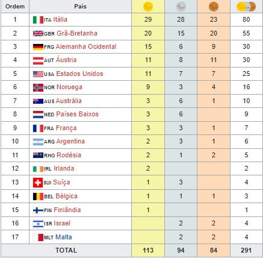

1960 Roma, ItáliaOs Jogos Paralímpicos de Verão de 1960, aconteceram pela primeira vez, em Roma, na Itália, entre os dias 18 e 25 de Setembro de 1960. Como sendo os primeiros jogos, a lesão na medula espinhal foi única deficiência presente nesses jogos. Participaram cerca de 400 atletas de 23 países. Chamado primeiramente de "Olimpíadas dos Portadores de Deficiência", o termo "Jogos Paralímpicos" só foi aprovado pelo Comitê Olímpico Internacional (COI) mais tarde, em 1984.Modalidades→Tiro com arco→Atletismo →Dardos →Sinuca →Natação →Tênis de mesa →Basquetebol em cadeira de rodas →Esgrima em cadeira de rodas Medalhas |